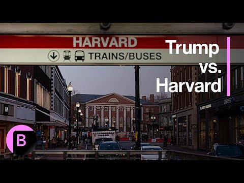

来B站一起耍【Global每日英语简报】
【特朗普寻求撤销哈佛大学的免税资格】
Summary: The paragraph discusses the legal and procedural challenges of revoking Harvard's tax-exempt status, its financial implications, and the ongoing feud between Harvard and the Trump administration.
摘要： 该段落讨论了撤销哈佛大学免税资格的法律和程序挑战、其财务影响，以及哈佛与特朗普政府之间持续不断的争执。

⏱️ Estimated Reading Time: 5 min
Does President Trump have the authority to do this on his own?
特朗普总统有权独自这样做吗？
He does not.
他没有。
And there is federal law that prevents the president from directing the IRS to take specific tax actions against, you know, an individual or an organization.
联邦法律禁止总统指示国税局对个人或组织采取具体的税务行动。
And so it's not clear at this point if what the president was referring to is some sort of directive that might come from the IRS or if this is just what he would like to see happen.
因此，目前尚不清楚总统指的是国税局可能发布的某种指令，还是仅仅是他希望看到的情况。
But even in the event that the IRS were to go down this path, this is not something that can just be done quickly with the swipe of a pen.
但即使国税局真的采取这一行动，这也不是一挥笔就能迅速完成的事情。
This is a prolonged process that would require sort of an audit of Harvard and its activities.
这是一个漫长的过程，需要对哈佛及其活动进行某种审计。
And then, you know, this is likely the kind of thing that the university would most likely challenge in court, and that would play out over the course of several years.
然后，这很可能是大学会在法庭上挑战的事情，而这将需要数年时间才能解决。
Mm hmm.
嗯。
So understanding that there are several things that would likely need to happen here before this actually would come to fruition, if indeed can if the administration is able to prove justification for this broke, what would the consequence be for Harvard and its finances?
因此，考虑到在真正实现之前可能需要发生几件事，如果政府确实能够证明这一举措的合理性，那么对哈佛及其财务会有什么后果？
It would be very serious.
这将非常严重。
I mean, you know, Harvard is the oldest and the richest university in the U.S.
我的意思是，哈佛是美国历史最悠久、最富有的大学。
And so compared to other colleges, it has a lot more financial firepower, but it benefits greatly from that tax exempt status.
因此，与其他大学相比，它拥有更多的财务实力，但它从免税地位中获益巨大。
It helps Harvard avoid paying property taxes.
这帮助哈佛避免缴纳房产税。
It has significant real estate, not just in Cambridge where it's based, but also in Boston.
它拥有大量房地产，不仅在其所在地剑桥，还在波士顿。
And it also allows the university to issue bonds without paying interest on those.
它还允许大学发行债券而无需支付利息。
And those are material benefits for the university.
这些对大学来说是实质性的好处。
And it would also, you know, if the IRS were to go down this path, that would have serious ramifications for the Massachusetts economy writ large, which is highly dependent on institutions like Harvard and the top tier medical schools and other research institutions that are already feeling the pressure of the Trump administration's funding cuts, specifically as it relates to NIH.
而且，如果国税局真的采取这一行动，那将对马萨诸塞州整体经济产生严重影响，该州经济高度依赖哈佛等机构以及顶级医学院和其他研究机构，这些机构已经感受到特朗普政府削减资金的压力，尤其是与NIH相关的资金。
Senator Elizabeth Warren spoke to Bloomberg News about this last month, called it flatly illegal for the president to direct the IRS to investigate or change the status for a taxpayer.
参议员伊丽莎白·沃伦上个月就此事接受了彭博新闻的采访，称总统指示国税局调查或改变纳税人的身份是完全非法的。
So this goes to court.
所以这会上法庭。
Yes.
是的。
Well, I mean, at this point, we still don't know.
嗯，我的意思是，目前我们还不知道。
I guess if there is something to fight about in court.
我想如果有什么需要在法庭上争辩的话。
But I would presume that if the IRS did go down this path, that it would most definitely be something that Harvard would challenge.
但我推测，如果国税局真的采取这一行动，哈佛肯定会提出挑战。
And we have already seen Harvard suing several U.S. agencies and government officials over that decision to freeze billions of dollars in funding that was supporting research on things like ALS and tuberculosis and other projects spread out across its various schools.
我们已经看到哈佛因冻结数十亿美元资金的决定起诉了多个美国机构和政府官员，这些资金原本支持ALS、结核病等研究以及其他分散在其各学院的项目。
And so, you know, this is an escalating feud between Harvard and the Trump administration that really was kicked off by demands by the Trump administration to assert more control over the way in which Harvard really runs itself.
因此，这是哈佛与特朗普政府之间不断升级的争执，起因是特朗普政府要求对哈佛的实际运作方式施加更多控制。
And the university pushed back against that and said that that was far beyond the stated purpose of really trying to curb anti-Semitism on campus and represented a threat to its independence.
而大学对此进行了反击，称这远远超出了声称的遏制校园反犹主义的目的，并对其独立性构成了威胁。
So you have seen a number of Democratic leaders, Elizabeth Warren being one of them, but also Governor Maura Healey in Massachusetts and the state's congressman as well, many of whom I will note, went to Harvard or taught there, really rallying around the school's cause as it pushes back on the Trump administration.
因此，你已经看到许多民主党领导人，包括伊丽莎白·沃伦，以及马萨诸塞州州长莫拉·希利和该州的国会议员，其中许多人曾就读或任教于哈佛，他们团结起来支持学校的事业，反击特朗普政府。